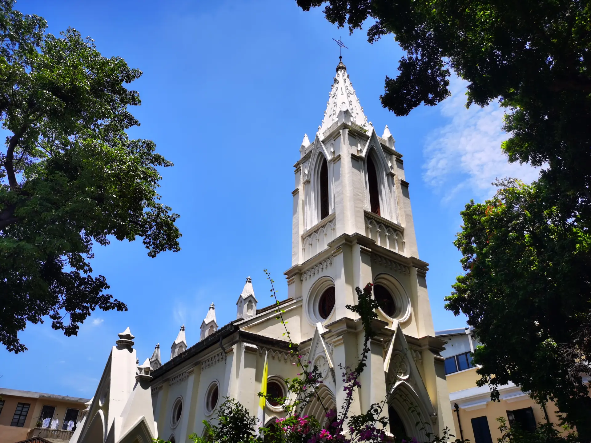
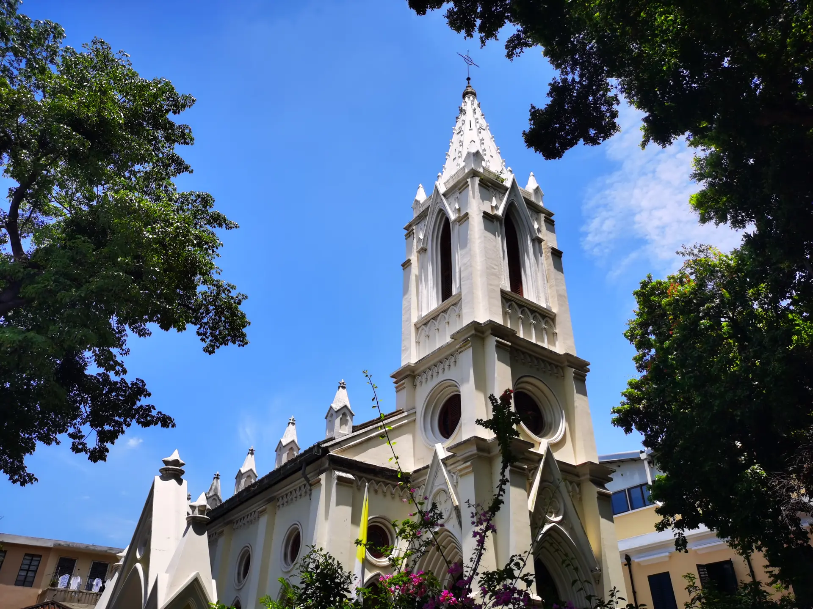

Interests | 兴趣爱好
张而不弛，文武弗能也；弛而不张，文武弗为也；一张一弛，文武之道也。
Music | 音乐
Travel | 旅行
Badminton | 羽毛球
Photography | 摄影
Favorite Music | 音乐收藏

突然好想你
Suddenly Missing You So Bad
Artist: 五月天 | Mayday
Genre: Rock / Pop
太聪明
Too Smart
Artist: 陈绮贞 | Cheer Chen
Genre: Pop
浪漫血液
Romantic
Artist: 林俊杰 | JJ Lin
Genre: Pop

喜帖街
Wedding Card Street
Artist: 谢安琪 | Kay Tse
Genre: Pop

人来人往
People Come and Go
Artist: 陈奕迅 | Eason Chan
Genre: Pop

终身美丽
Beautiful Life
Artist: 郑秀文 | Sammi Cheng
Genre: Pop
Vivaldi: The Four Seasons
维瓦尔第：四季
Artist: Anne-Sophie Mutter
Genre: Classical
Rachmaninoff Piano Concerto No.3
拉赫玛尼诺夫第三钢琴协奏曲
Artist: 王羽佳 | Yuja Wang
Genre: Classical
Beethoven Piano Concerto No.1
贝多芬第一钢琴协奏曲
Artist: Krystian Zimerman
Genre: Classical
Travel Memories | 旅行足迹
⛰️ Gannan | 甘南
Summer 2025 | 2025年夏
Explored the beautiful landscapes of Gannan, including the Labrang Monastery and Zoige Wetland.
探索了甘南的美丽风景，包括拉卜楞寺和若尔盖花湖。


🏜️ Qinghai & Gansu | 青海与甘肃
Summer 2024 | 2024年夏
Traveled through Qinghai and Gansu, visiting Qinghai Lake, Zhangye Danxia, and the Mogao Grottoes.
游历了青海和甘肃，参观了青海湖、张掖丹霞和莫高窟。


🏙️ Guangzhou | 广州
Summer 2023 | 2023年夏
Visited Guangzhou for the first time, exploring the Canton Tower, Shamian Island, Sacred Heart Cathedral, and enjoying delicious Cantonese cuisine.
首次游览广州，参观了广州塔、沙面岛、石室圣心大教堂，还品尝了烧腩仔。真系正嘢！
 



Badminton Heroes | 羽毛球偶像

郑思维 / 黄雅琼
Zheng Siwei / Huang Yaqiong
Category: Mixed Doubles | 混双
Country: China

安洗莹
An Se Young
Category: Women's Singles | 女单
Country: Korea

李宗伟
Lee Chong Wei
Category: Men's Singles | 男单
Country: Malaysia
Photo Gallery | 照片墙
Memory Moments | 记录生活中的美好瞬间


Life Philosophy | 生活态度
仰望星空，脚踏实地。
Dare to dream. Live the dream.
生活就像海洋，只有意志坚强的人才能到达彼岸。
This is an apple. I like apples. Apples are good for our health.
PS: Can you get the inside joke? : )